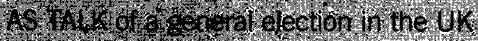

Scanning factors have an enormous influence on the image quality, and you should always realize that the OCR software doesn’t recognize documents, but the scanned images of documents! So, if you degrade the document by scanning it badly, the recognition is bound to suffer.
Given careful, correct use of your OCR software, you should get a recognition rate above 99% on most documents, including low-quality documents such as articles from old newspapers etc.
When the document quality degrades too much, you reach a “break off” point where the accuracy drops so low character recognition is no longer worthwhile. It is also true that each version of an OCR package is more accurate than the previous one, and that the “break off” point is pushed back each year.
We’re not trying to look for excuses here, there really are a number of factors that influence the OCR accuracy. There are indeed a number of things that can go wrong when the average, non-professional user starts scanning documents.
First of all, see to it that the brightness is set correctly. When your scan is too bright, thin characters can get broken up, when it is too dark, too much noise is introduced or all characters in a word touch and the character segmentation becomes impossible. Is there any doubt in your mind that these really bad scans won’t be recognized by your OCR software?

With too light documents, characters get broken up: “O” may become “()”, “m” may become “iii”, “in”, “ni” etc. Too dark documents on the other hand contain very heavy shapes, open letters get closed and too many characters are glued together: “c” becomes an “o”, the letter “h” becomes a “b” etc.

Such degraded images are often used in captchas, the images you have to recognize and enter on the keyboard after you’ve filled out a web form to prove you’re a human being and not a machine! (“Captcha” is the abbreviation of “Completely Automated Public Turing test to tell Computers and Humans Apart”.)


In some cases, it makes sense to take a (very) dark or (very) light xerox copy of a document and to scan that copy rather than the original document. This sometimes gives better results than adjusting the brightness and contrast setting of your scanner.
Secondly, pay some attention to lineskew. Although the page analysis and recognition are skew-tolerant, it may become difficult to window and recognize a page correctly when the skew is too significant. Limited lineskew (less than 0.5°) can be ignored because the OCR accuracy does not suffer.
Need we still say it? Select an appropriate scanning resolution. 300 dpi is the normal resolution for OCR applications, use 400 dpi when the text is smaller than 10 point. (And no interpolated resolutions please!)
5-point text at real size
5-point text magnified by 600%
When you zoom in sufficiently on such images, the “defects” of the image quickly become clear: “l” characters that are only 1 pixel wide, dots in “i” symbols composed of a single pixel etc. At real size, the text is just legible to a human person when you hold your nose close enough to your computer screen… (Even then, understand that “anti-aliasing” adds grey pixels to make the letters legible on-screen: this software technique diminishes jaggies by smoothening out harsh stair-like steps!)
(Now ask now yourself for a question how many pixels it minimally takes to form an actual character such as a lowercase “w” and an uppercase “W”? See for yourself: pushing aside all aesthetic considerations that make a letter pleasing to read, we’ve created “w” characters with the least possible amount of dots, and — to make it easier on your eyes — we’ve added an enlarged version. (Again, anti-aliasing applies to the small shapes!)

(The smallest recognizable lowercase “w” is 5 pixels wide and 3 pixels high, the smallest uppercase “W” is 5 pixels wide and 4 pixels high. Adding white space between the various letters, how many letters can you squeeze into a surface of 1 mm. scanned at 300 dpi (=12 pixels per mm.) and 600 dpi (=24 pixels per mm.)? Do the math!)
Finally, make sure that the right settings are enabled: don’t try to read a French document with the language set to English. And you know why: the accentuated characters (such as é, ê, à etc.) won’t come out correctly and the linguistics won’t provide any feedback to the recognition process.
Training the system further — The accuracy of OCR software — How good are your scanning skills? — With a little help from the friends — Recognizing snapshots — Recognizing prescanned images and faxes — Repurposing PDF files
Home page — Intro — Scanners — Images — History — OCR — Languages — Accuracy — Output — BCR — Pen scanners — Sitemap — Search — Contact – Feedback